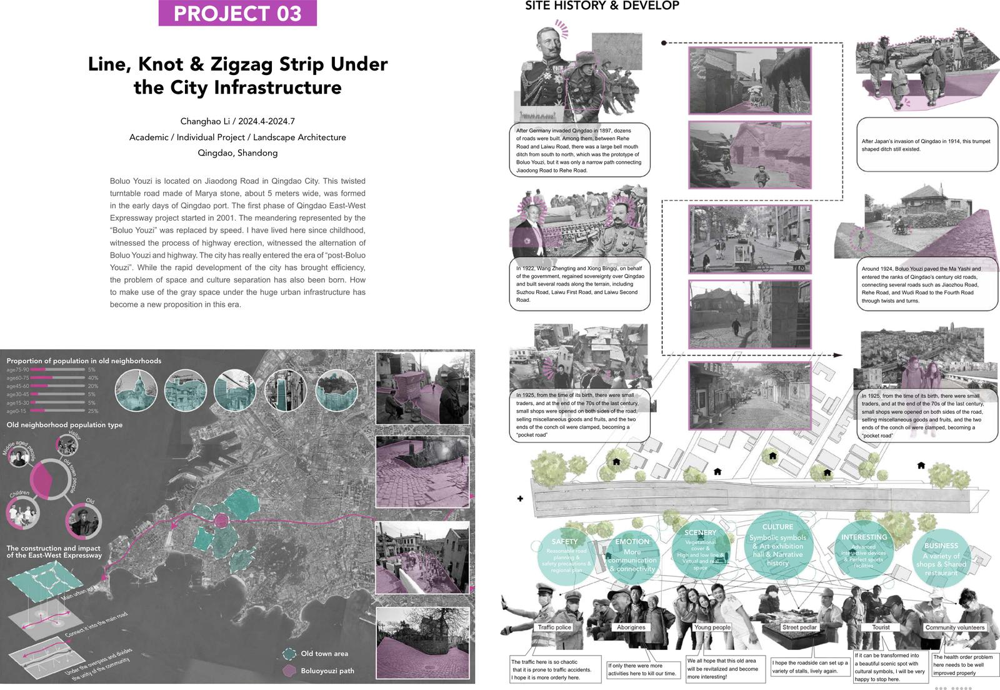
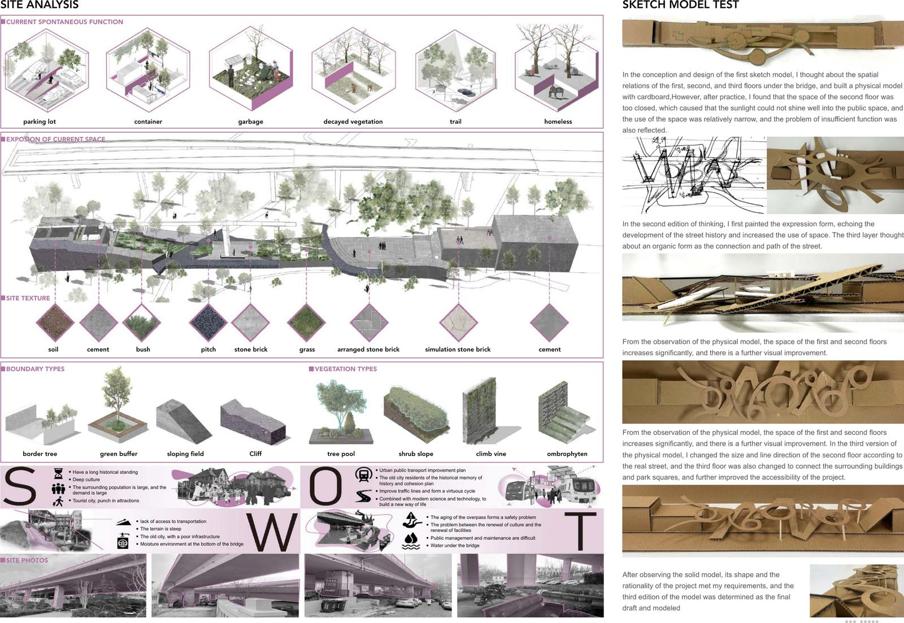
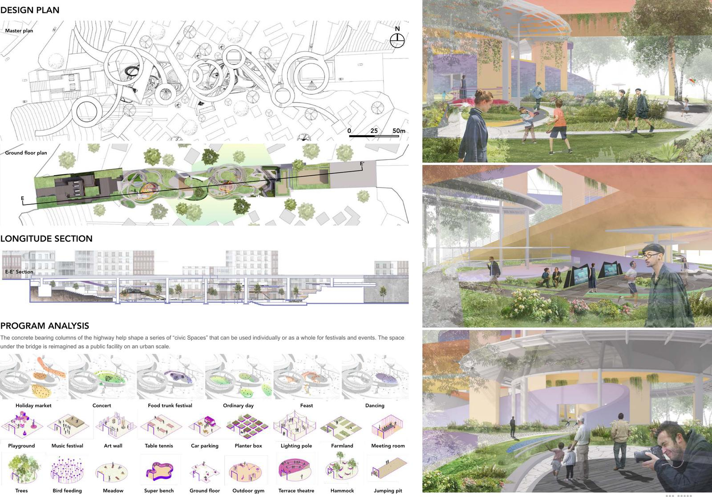

场地 / SITE
高架桥下，被速度取代的老路。
场地在青岛胶东路一带。“菠萝油子”是青岛港建港初期形成的马牙石盘道，约 5 米宽；2001 年青岛东西快速路一期开工后，蜿蜒的老路让位给了高架。我从小在这里长大，见证了高架的架设。
调研中，居民希望这里交通更有序、卫生更好，也希望有摊位和活动，让老街重新热闹起来。


设计 / DESIGN
用高架的承重柱，划分出一系列“市民空间”。
方案名为 Line, Knot & Zigzag Strip（线、结与折线）。高架的混凝土承重柱划分出一系列市民空间，可以单独使用，也可以连成整体，承办节日市集、美食节、音乐会等活动；平日里是散步、跳舞、喂鸟的地方。

成绩 / RECOGNITION
优秀毕业作品，NCDA 国家级三等奖。
- 校内获评优秀毕业作品
- 学院毕业设计评比第 2 名
- NCDA设计大赛环境设计方向三等奖（国家级）
页面图片取自本人作品集 Project 03。